Contoh Penggunaan Rumus dan Fungsi
Fungsi yang Paling Banyak Digunakan | Mengurangi | Kalikan | Bagi | Akar Kuadrat | Persentase | Nama Range | Nama Range Dinamis | Opsi Paste | Diskon
Fungsi yang Paling Banyak Digunakan
Mari kita lihat 10 fungsi Excel yang paling sering digunakan . Kunjungi bagian kami tentang fungsi untuk penjelasan terperinci dan fungsi yang lebih mengagumkan.
Tip: unduh file Excel dan coba masukkan fungsi-fungsi ini.
1. JUMLAH
Untuk menghitung jumlah sel yang berisi angka, gunakan fungsi COUNT di Excel.
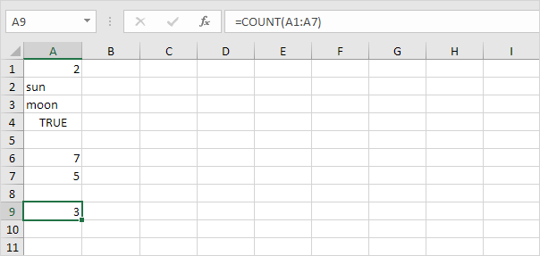
Catatan: gunakan COUNTA untuk menghitung semua sel yang tidak kosong. COUNTA adalah singkatan dari hitung semua.
2. SUM
Untuk menjumlahkan rentang sel, gunakan fungsi SUM di Excel. Fungsi SUM di bawah ini menjumlahkan semua nilai di kolom A.

Catatan: Anda juga dapat menggunakan fungsi SUM untuk menjumlahkan seluruh baris. Misalnya, =SUM(5:5) menjumlahkan semua nilai di baris ke-5.
3. JIKA
Fungsi IF memeriksa apakah suatu kondisi terpenuhi, dan mengembalikan satu nilai jika benar dan nilai lain jika salah.
Penjelasan: jika skor lebih besar atau sama dengan 60, fungsi IF yang ditunjukkan di atas mengembalikan Lulus, jika tidak mengembalikan Gagal. Untuk menyalin rumus ini dengan cepat ke sel lain, klik di sudut kanan bawah sel C2 dan seret ke bawah ke sel C6.
4. RATA-RATA
Untuk menghitung rata-rata sekelompok angka, gunakan fungsi AVERAGE (tidak ada ilmu roket di sini). Rumus di bawah ini menghitung rata-rata dari 3 angka teratas dalam rentang A1:A6.

Penjelasan: fungsi LARGE mengembalikan konstanta array {20,15,10}. Konstanta array ini digunakan sebagai argumen untuk fungsi AVERAGE , memberikan hasil 15.
5. COUNTIF
Fungsi COUNTIF di bawah ini menghitung jumlah sel yang berisi persis bintang + serangkaian karakter nol atau lebih.
Penjelasan: tanda bintang (*) cocok dengan serangkaian karakter nol atau lebih. Kunjungi halaman kami tentang fungsi COUNTIF untuk informasi dan contoh lebih lanjut.
6. SUMIF
Fungsi SUMIF di bawah ini menjumlahkan nilai dalam rentang B1:B5 jika sel yang sesuai dalam rentang A1:A5 berisi persis lingkaran + 1 karakter.

Penjelasan: tanda tanya (?) cocok dengan tepat satu karakter. Kunjungi halaman kami tentang fungsi SUMIF untuk informasi dan contoh lebih lanjut.
7. VLOOKUP
Fungsi VLOOKUP di bawah ini mencari nilai 53 (argumen pertama) di kolom paling kiri dari tabel merah (argumen kedua). Nilai 4 (argumen ketiga) memberi tahu fungsi VLOOKUP untuk mengembalikan nilai pada baris yang sama dari kolom keempat tabel merah.

Catatan: kunjungi halaman kami tentang fungsi VLOOKUP untuk mempelajari lebih lanjut tentang fungsi Excel yang hebat ini.
8. MIN
Untuk mencari nilai minimum, gunakan fungsi MIN. Ini sesederhana kedengarannya.
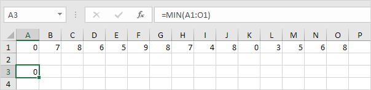
9. MAKS
Untuk mencari nilai maksimum, gunakan fungsi MAX.

Catatan: kunjungi bab kami tentang fungsi statistik untuk mempelajari lebih lanjut tentang Excel dan Statistik.
10. SUMPRODUCT
Untuk menghitung jumlah produk dari angka yang sesuai dalam satu atau beberapa rentang, gunakan fungsi SUMPRODUCT Excel yang kuat.

Penjelasan: fungsi SUMPRODUCT melakukan perhitungan ini: (2 * 1000) + (4 * 250) + (4 * 100) + (2 * 50) = 3500.
Pengurangan
Tidak ada fungsi SUBTRACT di Excel. Namun, ada beberapa cara untuk mengurangi angka di Excel . Apakah Anda siap untuk meningkatkan keterampilan Excel Anda?
1. Misalnya, rumus di bawah ini mengurangi angka dalam sel. Cukup gunakan tanda minus (-). Jangan lupa, selalu awali rumus dengan tanda sama dengan (=).

2. Rumus di bawah ini mengurangi nilai di sel A2 dan nilai di sel A3 dari nilai di sel A1.
3. Seperti yang bisa Anda bayangkan, rumus ini bisa sangat panjang. Cukup gunakan fungsi SUM untuk mempersingkat rumus Anda. Misalnya, rumus di bawah ini mengurangi nilai dalam rentang A2:A9 dari nilai di sel A1.

Lihatlah tangkapan layar di bawah ini. Untuk mengurangi angka di kolom B dari angka di kolom A, lakukan langkah-langkah berikut.
4a. Pertama, kurangi nilai di sel B1 dari nilai di sel A1.
4b. Selanjutnya, pilih sel C1, klik di sudut kanan bawah sel C1 dan seret ke bawah ke sel C6.

Lihatlah tangkapan layar di bawah ini. Untuk mengurangi angka dari rentang sel, jalankan langkah-langkah berikut.
5a. Pertama, kurangi nilai di sel A8 dari nilai di sel A1. Perbaiki referensi ke sel A8 dengan menempatkan simbol $ di depan huruf kolom dan nomor baris ($A$8).
5b. Selanjutnya, pilih sel B1, klik di sudut kanan bawah sel B1 dan seret ke bawah ke sel B6.
Penjelasan: ketika kita menyeret rumus ke bawah, referensi absolut ($A$8) tetap sama, sedangkan referensi relatif (A1) berubah menjadi A2, A3, A4, dst.
Jika Anda bukan pahlawan rumus, gunakan Tempel Spesial untuk mengurangi di Excel tanpa menggunakan rumus!
6. Misalnya, pilih sel C1.

7. Klik kanan, lalu klik Salin (atau tekan CTRL + c).
8. Pilih rentang A1:A6.
9. Klik kanan, lalu klik Tempel Spesial.
10. Klik Kurangi.

11. Klik Oke.
Catatan: untuk mengurangi angka dalam satu kolom dari angka di kolom lain, pada langkah 6, cukup pilih rentang, bukan sel.
Perkalian
Untuk mengalikan angka di Excel, gunakan simbol asterisk (*) atau fungsi PRODUCT. Pelajari cara mengalikan kolom dan cara mengalikan kolom dengan konstanta.
1. Rumus di bawah ini mengalikan angka dalam sel. Cukup gunakan simbol asterisk (*) sebagai operator perkalian. Jangan lupa, selalu awali rumus dengan tanda sama dengan (=).

2. Rumus di bawah ini mengalikan nilai dalam sel A1, A2 dan A3.
3. Seperti yang bisa Anda bayangkan, rumus ini bisa sangat panjang. Gunakan fungsi PRODUCT untuk mempersingkat rumus Anda. Misalnya, fungsi PRODUCT di bawah ini mengalikan nilai dalam rentang A1:A7.

4. Ini contoh lain.

Penjelasan: =A1*A2*A3*A4*A5*A6*A7*B1*B2*B3*B4*C1*8 menghasilkan hasil yang sama persis.
Lihatlah tangkapan layar di bawah ini. Untuk mengalikan dua kolom , lakukan langkah-langkah berikut.
5a. Pertama, kalikan nilai di sel A1 dengan nilai di sel B1.
5b. Selanjutnya, pilih sel C1, klik di sudut kanan bawah sel C1 dan seret ke bawah ke sel C6.
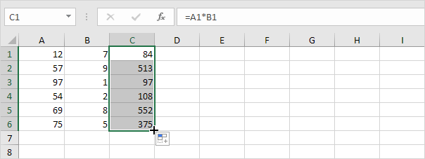
Lihatlah tangkapan layar di bawah ini. Untuk mengalikan kolom angka dengan angka konstan , lakukan langkah-langkah berikut.
6a. Pertama, kalikan nilai di sel A1 dengan nilai di sel A8. Perbaiki referensi ke sel A8 dengan menempatkan simbol $ di depan huruf kolom dan nomor baris ($A$8).
6b. Selanjutnya, pilih sel B1, klik di sudut kanan bawah sel B1 dan seret ke bawah ke sel B6.

Penjelasan: ketika kita menyeret rumus ke bawah, referensi absolut ($A$8) tetap sama, sedangkan referensi relatif (A1) berubah menjadi A2, A3, A4, dst.
Jika Anda bukan pahlawan rumus, gunakan Tempel Spesial untuk mengalikan di Excel tanpa menggunakan rumus!
7. Misalnya, pilih sel C1.
8. Klik kanan, lalu klik Copy (atau tekan CTRL + c).
9. Pilih rentang A1:A6.
10. Klik kanan, lalu klik Tempel Spesial.
11. Klik Kalikan.

12. Klik Oke.
Catatan: untuk mengalikan angka dalam satu kolom dengan angka di kolom lain, pada langkah 7, cukup pilih rentang alih-alih sel.
Pembagian
Tidak ada fungsi DIVIDE di Excel. Cukup gunakan garis miring (/) untuk membagi angka di Excel .
1. Rumus di bawah ini membagi angka dalam sel. Gunakan garis miring (/) sebagai operator pembagian. Jangan lupa, selalu awali rumus dengan tanda sama dengan (=).

2. Rumus di bawah ini membagi nilai di sel A1 dengan nilai di sel B1.

3. Excel menampilkan #DIV/0! kesalahan saat rumus mencoba membagi angka dengan 0 atau sel kosong.

4. Rumus di bawah ini membagi 43 dengan 8. Tidak ada yang istimewa.

5. Anda dapat menggunakan fungsi QUOTIENT di Excel untuk mengembalikan bagian bilangan bulat dari sebuah divisi. Fungsi ini membuang sisa pembagian.

6. Fungsi MOD di Excel mengembalikan sisa pembagian.

Lihatlah tangkapan layar di bawah ini. Untuk membagi angka dalam satu kolom dengan angka di kolom lain, lakukan langkah-langkah berikut.
7a. Pertama, bagi nilai di sel A1 dengan nilai di sel B1.

7b. Selanjutnya, pilih sel C1, klik di sudut kanan bawah sel C1 dan seret ke bawah ke sel C6.

Lihatlah tangkapan layar di bawah ini. Untuk membagi kolom angka dengan angka konstan, lakukan langkah-langkah berikut.
8a. Pertama, bagi nilai di sel A1 dengan nilai di sel A8. Perbaiki referensi ke sel A8 dengan menempatkan simbol $ di depan huruf kolom dan nomor baris ($A$8).

8b. Selanjutnya, pilih sel B1, klik di sudut kanan bawah sel B1 dan seret ke bawah ke sel B6.

Penjelasan: ketika kita menyeret rumus ke bawah, referensi absolut ($A$8) tetap sama, sedangkan referensi relatif (A1) berubah menjadi A2, A3, A4, dst.
Jika Anda bukan pahlawan rumus, gunakan Tempel Spesial untuk membagi di Excel tanpa menggunakan rumus!
9. Misalnya, pilih sel C1.
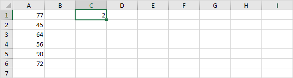
10. Klik kanan, lalu klik Salin (atau tekan CTRL + c).
11. Pilih rentang A1:A6.
12. Klik kanan, lalu klik Tempel Spesial.
13. Klik Bagi.

14. Klik Oke.

Catatan: untuk membagi angka dalam satu kolom dengan angka di kolom lain, pada langkah 9, cukup pilih rentang alih-alih sel.
Akar pangkat dua
The akar kuadrat dari angka adalah nilai yang, bila dikalikan dengan sendirinya, memberikan nomor tersebut. Fungsi SQRT di Excel mengembalikan akar kuadrat dari sebuah angka.
1. Pertama, untuk mengkuadratkan suatu bilangan, kalikan bilangan itu dengan dirinya sendiri. Misalnya, 4 * 4 = 16 atau 4^2 = 16.

Catatan: untuk menyisipkan simbol tanda sisipan ^, tekan SHIFT + 6.
2. Akar kuadrat dari 16 adalah 4.

3. Alih-alih menggunakan fungsi SQRT, Anda juga bisa menggunakan eksponen 1/2. Jangan lupa tanda kurung.
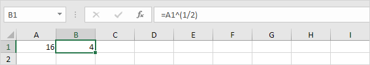
4. Jika angka negatif, fungsi SQRT mengembalikan #NUM! kesalahan.
5. Anda dapat menggunakan fungsi ABS untuk menghilangkan tanda minus (-) dari angka negatif.

Excel tidak memiliki fungsi bawaan untuk menghitung akar ke-n dari suatu angka. Untuk menghitung akar ke-n dari suatu bilangan, cukup naikkan bilangan tersebut ke pangkat 1/n.
6. Misalnya, 5 * 5 * 5 atau 5^3 adalah 5 pangkat tiga.
7. Akar pangkat tiga dari 125 adalah 5.

8. Misalnya, 2 * 2 * 2 * 2 * 2 * 2 atau 2^6 adalah 2 pangkat enam.

9. Akar keenam dari 64 adalah 2.
Persentase
Masukkan Persentase | Persentase dari Total | Naik Persentase | Perubahan Persentase
Menghitung persentase di Excel itu mudah. Persentase berarti 'dari 100', jadi 72% adalah '72 dari 100' dan 4% adalah '4 dari 100', dll.
Masukkan Persentase
Untuk memasukkan persentase di Excel, jalankan langkah-langkah berikut.
1. Pertama, masukkan angka desimal.

2. Pada tab Beranda, di grup Angka, klik simbol persentase untuk menerapkan format Persentase.

Hasil.

Catatan: untuk mengubah persentase di sel A1, cukup pilih sel A1 dan ketik persentase baru (jangan ketik angka desimal).
Persentase dari Total
Untuk menghitung persentase total di Excel, jalankan langkah-langkah berikut.
1. Masukkan rumus yang ditunjukkan di bawah ini. Rumus ini membagi nilai di sel A1 dengan nilai di sel B1. Cukup gunakan garis miring (/) sebagai operator pembagian. Jangan lupa, selalu awali rumus dengan tanda sama dengan (=).
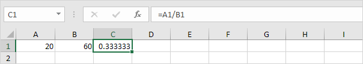
2. Pada tab Beranda, di grup Angka, klik simbol persentase untuk menerapkan format Persentase.
Hasil.
3. Pada tab Beranda, di grup Angka, klik tombol Tingkatkan Desimal satu kali.

Hasil.
Catatan: Excel selalu menggunakan nilai presisi yang mendasarinya dalam penghitungan, terlepas dari berapa banyak desimal yang Anda pilih untuk ditampilkan.
Tingkatkan berdasarkan Persentase
Untuk menambah angka dengan persentase di Excel, jalankan langkah-langkah berikut.
1. Masukkan nomor di sel A1. Masukkan angka desimal (0.2) di sel B1 dan terapkan format Persentase.

2. Untuk menambah angka di sel A1 sebesar 20%, kalikan angkanya dengan 1,2 (1+0.2). Rumus di bawah ini berhasil.

Catatan: Excel menggunakan urutan default di mana perhitungan terjadi. Jika bagian dari rumus ada dalam tanda kurung, bagian itu akan dihitung terlebih dahulu.
3. Untuk mengurangi angka dengan persentase, cukup ubah tanda plus menjadi tanda minus.

Perubahan Persentase
Untuk menghitung persentase perubahan antara dua angka di Excel, jalankan langkah-langkah berikut.
1. Masukkan nomor lama di sel A1 dan nomor baru di sel B1.

2. Pertama, hitung selisih antara baru dan lama.
3. Selanjutnya, bagi hasil ini dengan angka lama di sel A1.

Catatan: Excel menggunakan urutan default di mana perhitungan terjadi. Jika bagian dari rumus ada dalam tanda kurung, bagian itu akan dihitung terlebih dahulu.
4. Pada tab Beranda, dalam grup Angka, klik simbol persentase untuk menerapkan format Persentase.
Hasil.
5. Rumus (Baru-Lama)/Lama selalu berhasil.
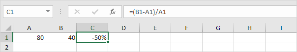
Catatan: kunjungi halaman kami tentang rumus perubahan persen untuk contoh praktis.
Rentang bernama
Buat rentang bernama atau konstanta bernama dan gunakan nama ini dalam rumus Excel Anda. Dengan cara ini Anda dapat membuat rumus Anda lebih mudah dipahami.
Untuk membuat rentang bernama, jalankan langkah-langkah berikut.
1. Pilih rentang A1:A4.

2. Pada tab Rumus, dalam grup Nama yang Ditentukan, klik Tentukan Nama .

3. Masukkan nama dan klik OK.

Ada cara yang lebih cepat untuk melakukan ini.
4. Pilih rentang, ketik nama di kotak Nama dan tekan Enter.
5. Sekarang Anda dapat menggunakan rentang bernama ini dalam rumus Anda. Misalnya, jumlahkan Harga.
Untuk membuat konstanta bernama, jalankan langkah-langkah berikut.
6. Pada tab Rumus, dalam grup Nama yang Ditentukan, klik Tentukan Nama.
7. Masukkan nama, ketik nilai, dan klik OK.
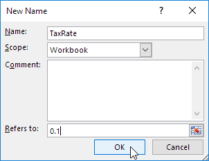
8. Sekarang Anda dapat menggunakan konstanta bernama ini dalam rumus Anda.

Jika tarif pajak berubah, gunakan Pengelola Nama untuk mengedit nilai dan Excel secara otomatis memperbarui semua rumus yang menggunakan TaxRate.
9. Pada tab Rumus, dalam grup Nama yang Ditentukan, klik Pengelola Nama .

10. Pilih TaxRate dan klik Edit.
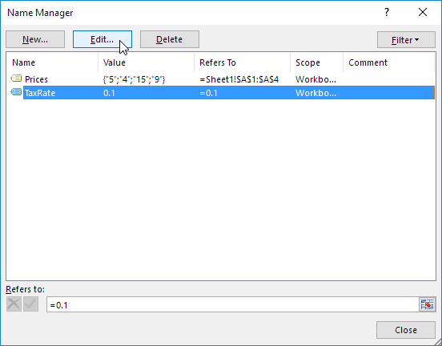
Catatan: gunakan Pengelola Nama untuk melihat, membuat, mengedit, dan menghapus rentang bernama.
Jika data Anda memiliki label, Anda dapat dengan cepat membuat rentang bernama di Excel.
11. Misalnya, pilih rentang A1:D13.
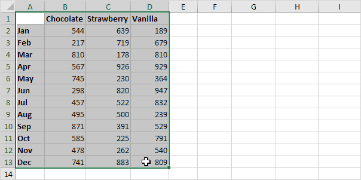
12. Pada tab Rumus, dalam grup Nama yang Ditentukan, klik Buat dari Pilihan.

13. Centang Baris atas dan kolom Kiri dan klik OK.

14. Excel membuat 12 + 3 = 15 rentang bernama! Cukup pilih rentang dan lihat kotak Nama.

15. Gunakan operator intersect (spasi) untuk mengembalikan perpotongan dua rentang bernama.

Catatan: coba sendiri. Unduh file Excel , buat rentang bernama dengan cepat dan mudah (mulai dengan langkah 11) dan cari nilai apa pun dalam rentang dua dimensi ini.
Rentang Bernama Dinamis
Sebuah rentang dinamis bernama mengembang secara otomatis saat Anda menambahkan nilai ke kisaran.
1. Misalnya, pilih rentang A1:A4 dan beri nama Harga.
2. Hitung jumlahnya.
3. Saat Anda menambahkan nilai ke rentang, Excel tidak memperbarui jumlah.
Untuk memperluas rentang bernama secara otomatis saat Anda menambahkan nilai ke rentang, jalankan langkah-langkah berikut ini.
4. Pada tab Rumus, dalam grup Nama yang Ditentukan, klik Manajer Nama.
5. Klik Sunting.
6. Klik pada kotak "Refers to" dan masukkan rumus =OFFSET($A$1,0,0,COUNTA($A:$A),1)

Penjelasan: fungsi OFFSET membutuhkan 5 argumen. Referensi: $A$1, baris untuk diimbangi: 0, kolom untuk diimbangi: 0, tinggi: COUNTA($A:$A) dan lebar: 1. COUNTA($A:$A) menghitung jumlah nilai di kolom A yang tidak kosong. Saat Anda menambahkan nilai ke rentang, COUNTA($A:$A) meningkat. Akibatnya, rentang yang dikembalikan oleh fungsi OFFSET meluas.
7. Klik OK dan Tutup.
8. Sekarang, saat Anda menambahkan nilai ke rentang, Excel memperbarui jumlah secara otomatis.
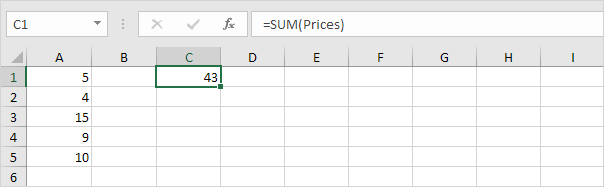
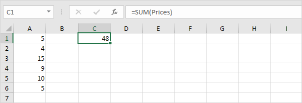
Opsi Tempel
Tempel | Nilai | Rumus | Memformat | Tempel Spesial
Contoh ini mengilustrasikan berbagai opsi tempel di Excel . Sel B5 di bawah ini berisi fungsi SUM yang menghitung jumlah rentang B2:B4. Selanjutnya, kami mengubah warna latar belakang sel ini menjadi kuning dan menambahkan batas.
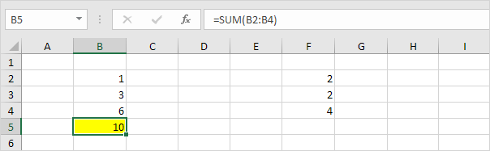
Tempel
Opsi Tempel menempelkan semuanya.
1. Pilih sel B5, klik kanan, lalu klik Salin (atau tekan CTRL + c).
2. Selanjutnya, pilih sel F5, klik kanan, lalu klik Tempel di bawah 'Opsi Tempel:' (atau tekan CTRL + v).

Hasil.
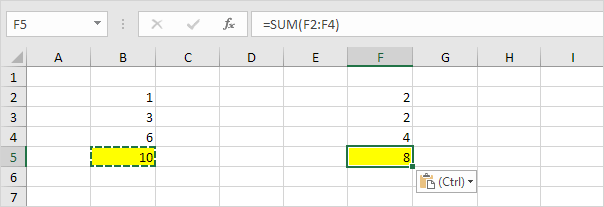
Nilai
Opsi Nilai menempelkan hasil rumus.
1. Pilih sel B5, klik kanan, lalu klik Salin (atau tekan CTRL + c).
2. Selanjutnya, pilih sel D5, klik kanan, lalu klik Nilai di bawah 'Opsi Tempel:'

Hasil.
Catatan: untuk dengan cepat mengganti rumus di sel B5 dengan hasil sendiri, pilih sel B5, tekan F2 (untuk mengedit rumus) dan tekan F9.
Rumus
Opsi Rumus hanya menempelkan rumus.
1. Pilih sel B5, klik kanan, lalu klik Salin (atau tekan CTRL + c).
2. Selanjutnya, pilih sel F5, klik kanan, lalu klik Rumus di bawah 'Opsi Tempel:'

Hasil.

Memformat
Opsi Pemformatan hanya menempelkan pemformatan.
1. Pilih sel B5, klik kanan, lalu klik Salin (atau tekan CTRL + c).
2. Selanjutnya, pilih sel D5, klik kanan, lalu klik Formatting di bawah 'Paste Options:'

Hasil.

Catatan: Format Painter copy/paste memformat lebih cepat.
Tempel Spesial
Kotak dialog Tempel Spesial menawarkan lebih banyak opsi tempel. Untuk meluncurkan kotak dialog Tempel Spesial, jalankan langkah-langkah berikut.
1. Pilih sel B5, klik kanan, lalu klik Salin (atau tekan CTRL + c).
2. Selanjutnya, pilih sel D5, klik kanan, lalu klik Tempel Spesial.

Kotak dialog Tempel Spesial muncul.

Catatan: di sini Anda juga dapat menemukan opsi tempel yang dijelaskan di atas. Anda juga dapat menempelkan komentar saja, kriteria validasi saja, menggunakan tema sumber, semua kecuali batas, lebar kolom, rumus dan format angka, nilai dan format angka. Anda juga dapat menggunakan kotak dialog Tempel Spesial untuk melakukan operasi cepat, melewatkan bagian yang kosong, dan mentranspos data.
Diskon
Hitung Persentase Diskon | Hitung Harga Diskon | Hitung Harga Asli
Jika Anda mengetahui harga asli dan harga diskon, Anda dapat menghitung persentase diskon . Jika Anda mengetahui harga asli dan persentase diskon, Anda dapat menghitung harga diskon , dll.
Hitung Persentase Diskon
Jika Anda mengetahui harga asli dan harga diskon, Anda dapat menghitung persentase diskon.
1. Pertama, bagi harga diskon dengan harga aslinya.

Catatan: Anda masih membayar $60 dari $80 yang asli. Ini sama dengan 75%.
2. Kurangi hasil ini dari 1.

Catatan: jika Anda masih membayar 75%, Anda tidak membayar 25% (persentase diskon).
3. Pada tab Beranda, di grup Angka, klik simbol persentase untuk menerapkan format Persentase.
Hasil.

Hitung Harga Diskon
Jika Anda mengetahui harga asli dan persentase diskon, Anda dapat menghitung harga diskon.
1. Pertama, kurangi persentase diskon dari 1.

Catatan: Anda masih membayar 75%.
2. Kalikan hasil ini dengan harga aslinya.
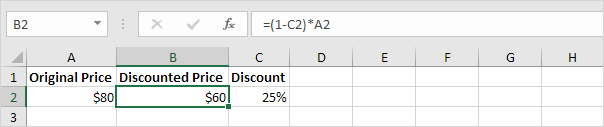
Catatan: Anda masih membayar 75% dari $80 yang asli. Ini sama dengan $60.
Hitung Harga Asli
Jika Anda mengetahui harga diskon dan persentase diskon, Anda dapat menghitung harga aslinya. Lihatlah tangkapan layar sebelumnya. Untuk menghitung harga diskon, kami mengalikan harga asli dengan (1 - Persentase Diskon).
1. Untuk menghitung harga asli, cukup bagi harga diskon dengan (1 - Persentase Diskon).